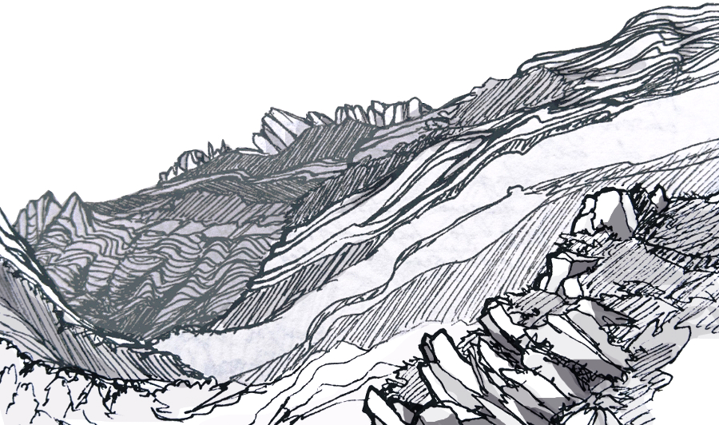

What am I reading? (April/May 2017)

Sketch of Velika Paklenica in the Dinaric Alps, from a house on the mountain where I took shelter from thunder & lightning storms (:
I spent the last two months “traveling” in the Balkans (to be detailed in a separate post!)
If you know me, you know I travel in a pretty dumb way that is not exactly relaxing. My reading habits were a lot more erratic than when I was in a winter coma in Brooklyn; the cracks of idle time I’d been training myself to spend on books instead of flipping through social stuff on my phone got redelegated to things like staring at OSM, sending couchsurfing emails, and trying to figure out how to pronounce stuff in Serbian.
>Wikipedia!
Oh, and reading cached Wikipedia pages of local/regional history/geology! which was such a great idea, it was the first trip I’ve done something like that and I would definitely recommend it.
In fact it was such a good exercise that I went back and cached the Wikipedia pages for places I’m quite familiar with. Notable selection: list of hills in SF, geology of the Yosemite area, California water wars. (also I found this … and here’s a classic). (This wikidive is starting to inspire a roadtrip). (GREAT now I’m homesick for California :U )
And here’s the actual books I managed to read in my two months of tramping!
>Savage Theories – Pola Oloixarac (2008)
genre postmodern magical realism?
tldr; weird as hell, 10/10 would recommend
Pola Oloixarac is like Argentinian DFW-lite. The entire time my brain was casually like “what the fuck is this shit” yet also strangely enjoying it. If you like David Foster Wallace/postmodern lit, you’ll know what I mean. If you don’t, you might not like this book, it is weird as hell. Try it! It’s a smashing and violent smorgasbord of the Buenos Aires alternative scene, evolution theories/philosophy, Argentinian history, and idk, how weird people can be.
>The Handmaid’s Tale – Margaret Atwood (1985)
genre speculative fiction, dystopian
tldr; good but (unpopular opinion?) like contemporary-junk-food-fic-good, e.i. Hunger Games
This was my first Margaret Atwood book!
I picked this up last winter because a lot of noise was made around the TV adaptation, and just got around to actually reading it.
My favourite part was seeing hints of the underlying 80’s feminist attitudes. I am such a fan of the meta-context of social-commentary-fic along with the context in the fics themselves! but maybe that’s just me being young and not having yet experienced much history myself. I like to imagine future kids reading fic from nowadays and being fascinated by contemporary SJW attitudes, ha.
The epilogue was a bit awkward, I thought it took away from the uncertainty and wispy dystopian feel of the story by contextualising it too much. I’d suggest not reading it and pretending it doesn’t exist :D Also check out the wikipedia page after, it has some interesting info.
>Letters to a Young Muslim – Omar Saif Ghobash (2017)
genre non-fic, semi-autobiographical, culture, Islam
tldr; would recommend!
This was notably my first audio book ever. I “read” it on the bus from London to Edinburgh, because the air conditioning was drying out my contacts and I had to keep my eyes closed. This experience has relaxed my suspicion of audiobooks, or maybe this was just the perfect candidate: it’s written in second person, literally letters from the author to his sons, and narrated by the author himself, which made for a really good listen.
He talks a lot about his own life, a slice into the middle east for someone (me) who has very little context into what that’s like. At first I was like ugh, this book would be so different if he had daughters to write to, but then he addresses that too! I really really like how he urges his kids & country to recontextualise their culture in the modern globalised world, to express themselves in productive ways, take responsibility for the good and bad things of their culture, and to create contemporary and relatable art and media. His optimistic and practical attitude was really heartening. And he communicates these thoughts really well (I can’t do it justice with a summary), like I almost want to take his ideas, generalise them a bit, and send them to my parents.
>Babel-17 – Samuel R. Delany (1966)
genre OG sci-fi, micro space opera
tldr; groundbreaking sci-fi for its time, and aged well :D
Don’t read plot summaries for this! because it was really interesting to work out what the story was getting at about language and how it shapes thoughts, especially keeping in mind this was written in the 60’s. Apparently this story influenced a lot of sci-fi down the line, so reading this was a bit of a temporal pilgrimage in my favourite genre (:
>The Man Who Was Thursday – G. K. Chesterton (1908)
genre “metaphysical thriller”; police and anarchists being silly
tldr; It was fun!
Following A Tree Grows In Brooklyn while living in Brooklyn, I’ve been keen to read books set in the places I’m traveling to. While in London I’d remembered that Ilana had recommended The Man Who Was Thursday back when I saw her last December. It’s not really the type of book I usually read but I found myself enjoying it!
It involves turn of the century shenanigans of classically serious institutions (police? anarchists??) who were trying super hard to take things seriously, but things kept going spectacularly wrong in absurd twists. It seemed to be some sort of meta-satire, a short and fun read, different tone/mood that what I usually go for but I’d recommend it!
>Borges: A Personal Anthology – Jorge Luis Borges (1961)
genre short stories, mostly set in Argentina
tldr; very dreamy and I found it hard to focus while reading them, but they tend to be pretty good, yet oddly not completely satisfying, but I think this is the point.
On the second floor, on the top story, the house seemed to be infinite and growing. The house is not this large, he thought. It is only made larger by the penumbra, the symmetry, the mirrors, the years, my ignorance, the solitude.
These are the topics Wikipedia says Borges writes about: dreams, labyrinths, libraries, mirrors, fictional writers, philosophy, and religion. This is a pretty rad aesthetic. I found it to be pretty accurate in this collection of short stories by Borges assembled by Borges, an early writer of magical realism.
Because of the magical realism and short stories, I couldn’t help but compare this to García Márquez’s Strange Pilgrims which I read the month before. I don’t know why, but I found García Márquez’s world a lot more satisfying, like nice popping sounds and things fitting into things type of satisfying. While I also liked these stories by Borges, they felt a lot more ethereal. Or maybe it was me, having been on the road for a while, projecting my losing of my sense of self (to be revisited in a future blog post :P) onto the stories. Definitely worth a read either way!
(Unforunately I accidentally returned the kindle library book before I got to save my bookmarks/notes so I can’t recommend the titles of my favourite stories.) But there’s a quote that accurately describes my feels sometimes that I’d had the forethought to have screenshotted:
In the days and nights which followed the operation he came to realise that he had merely been, up until then, in a suburb of hell.
>A Problem From Hell: America and the Age of Genocide – Samantha Power (2002)
genre non-fic, history, foreign policy
tldr; quite long and well-researched, if you’re interested in this topic this is the book to read
"From now on no government may kill off a large block of its own subjects or citizens of any country with impunity.”
I mentioned I’d been reading a lot of Wikipedia history pages, so I caught up on a lot of Balkan history (and refreshed on WWI/WWII history, which is a topic of focus in a lot of European museums). I’d grown up with my mom heavily criticising our liberal American history classes for glossing over the Japanese occupation of China (which heavily affected her life), and to my horror and embarassement there seems to be an entire stack of more genocides I’d failed to learn very much about in school.
It’s cool, I’ve gone about fixing this. The first part of the book is about the Armenian Genocide and Holocaust leading up to this guy Raphael Lemkin devoting his life to outlawing genocide (he invented the word so people could wrap their brains around the idea) and how resistant world leaders were to ratifying this. It sucks that it has to be this way, but I can understand why. Like, what are we supposed to do?? You (a major world power) can’t not intervene because that is horrific, but intervening also causes all sorts of unintended destructive perturbation (I heard a lot of first hand accounts of this while traveling in the Balkans last month). Genocide is the titular “problem from hell” because you’re fucked either way.
The book is good, maybe even too good. It’s quite long, very well researched, many shocking primary sources (e.i. I can’t believe a person in this century believed this thing and said these words about human beings), and not exactly the kind of subject matter you can binge. I haven’t finished it.
Anyway. Heavy shit for the summer. I’ll probably skip to the second part that goes over historical accounts of genocide in Cambodia, Iraq, Bosnia, Rwanda and Kosovo (or skim on wikipedia) because I’m halfway through and it hasn’t recommended any actionable items, and there’s no happy endings, so I guess I’m just here for the history.
>Kindred – Octavia Bulter (1979)
genre extremely soft sci-fi, basically sci-fi brie, maybe sci-fi cream cheese
tldr; enjoyable pop fiction
It feels like pop fiction so I read it quickly, but it’s interesting to note that it was written in the 70s (the civil rights movement was in the 50s-60s). It’s about an American black woman who uncontrollably flickers between her present-day 70s to (oh no) a plantation in the Antebellum South. My first Octavia Butler book, and I’d take recommendations for similar authors \o/
>Essays – Ralph Waldo Emerson (mid-1800s)
genre essays
tldr; aahh…
Ok so I love nature and my life is basically man vs nature, so I expected to like reading Ralph Waldo Emerson. Turns out this writing is SUPER HARD TO READ, or maybe I’ve slowly become illiterate over the years since I’ve left high school. I shamefully prefer Wikipedia summaries of this beliefs and ideas over his actual writing. (Then again, I end up feeling similarly to most philosophers I’ve attempted to read). I made it about halfway through On Self-Reliance, but maybe it was because of insufficient coffee! We’ll try again next month \o/
>Whewww.
Embarrassingly I don’t think I read a single book while I was in Croatia (the last two weeks of my trip).
It’s June! Holy shit. Where is the year going?? As of a week ago I’m back in steady-state city-life and finding myself super pleased with this thing where I’m not checking the mine map for mines or memorising the names of the small towns between where I am and where I need to be or crash-coursing the Cyrillic alphabet (twice, after realising the neighboring country uses it slightly different). It’s kind of nice to sit down at a COMPUTER and type at a KEYBOARD.
I know, my dear readers are mostly office potatoes jealously eyeing my life of wild abandon but the point of all that was to remind me about the virtues of having a solid career :P And it worked! I’ll be sitting in offices all summer and I’m pretty excited about it, which was not an attitude I could see myself having last year when I was doing exactly that. I’ve got the sleeping on benches and camping in snow all out of my system and am pleased to rejoin society and partake in regular showers and non-disposable friendships.
Anyway, say hi if you’re in Berlin, I don’t have the budget to eat out but we can enjoy the LOVELY, PREDICTABLE, SUNNY BERLIN WEATHER with a park/canal/river stroll or you can come over and I can test my vegetarian cooking on you :D :D :D
And to conclude, a toast to a temporary end to my travels, here’s some thoughts from Borges on mortality:
There is a nearby street forbidden to my step,
There is a mirror that has seen me for the last time,
There is a door I have shut until the end of the world.
Among the books in my library
There are some I shall never reopen.(Limits, Borges)
comments
No comments at the moment \o/ Hey, you could write one!
leave a comment
I really like comments!! Easy mode: email comments@daiyi.co, @ me or send a twitter dm. Hard mode: Make a PR.